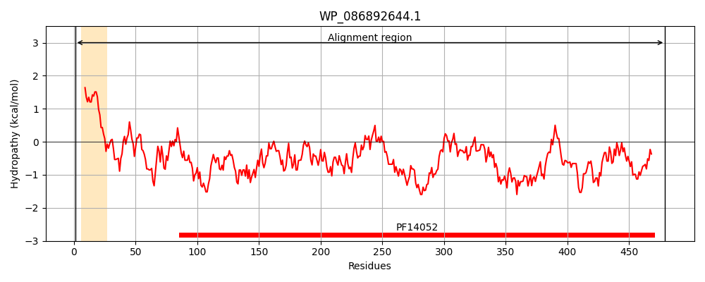
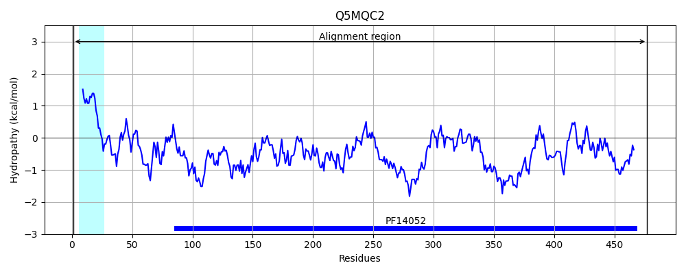
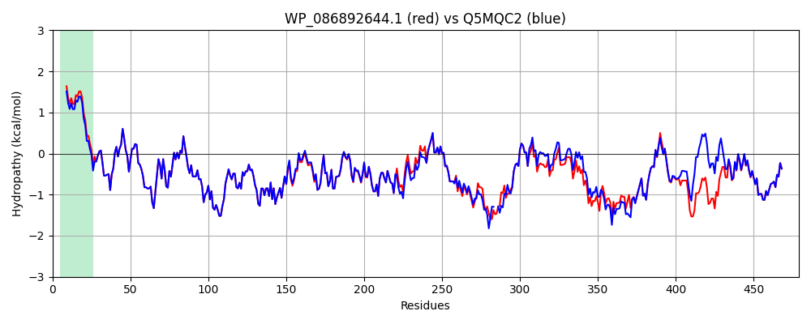

Hit Accession: Q5MQC2
Hit TCID: 1.B.73.1.1
Hit Description: gnl|BL_ORD_ID|14432 gnl|TC-DB|Q5MQC2|1.B.73.1.1 Outer membrane protein OS=Escherichia coli GN=wzi PE=4 SV=1
Mach Len: 479
e:0.000000
Query TMS Count : 1
Hit TMS Count: 1
TMS-Overlap Score: 1.100000
Predicted Substrates:CHEBI:61650;[3)-beta-D-galactopyranuronosyl-(1->3)-2-acetamido-4-amino-2,4,6-trideoxy-alpha-D-glucopyranosyl-(1->4)-beta-D-galactopyranurosyl-(1->]n
BLAST Alignment:
Score: 2378 , Bit scores: 920 bits, E-value: 0.0e+00, Alignment length: 479, Percentage identity: 92
Query: 1 MIKIARIAVTLGLLSSLGVQAYAAGLVVNDNDLRNDLAWLSDRGVIHLSLSTWPLSQEEIARALKKAKPSYSSEQVVLARINQRLSALKADFRVTGYTSTDQPGTPQGFGQTQPADNSLGLAFNNSGEWWDVHLQGNVEGGERISNGSRFNANGAYGAVKFWNQWLSFGQVPQWWGPGYEGSLIRGDAMRPMTSFLMQRAEQAAPETWWLRWVGPWQYQISASQMNQYTAVPHTKIIGGRFTFSPFQSLELGASRIMQWGGEGRPESLSNFWDGLTGKDNTAANDPNEPGNQLAGFDFKFKLEPTLGWPVSFYGQMIGEDESGYLPSANMFLGGVEGHHGWGKDAVNWYIEAHDTRTNMNRIGYSYTHHIYTDGYYQQGYPLGDAMGGDGQLLAGKVELITEDNQRWSTRLVYAKVNPKDQSINKAFPHSDTLKGVQLGWSGDVYQSVRLNTSLWYTNANNSDSDDVGASAGIEIPFSL 479
MIKIARIAVTLGLLSSLG QAYAAGLVVNDNDLRNDLAWLSDRGVIHLSLSTWPLSQEEIARALKKAKPSYSSEQVVLARINQRLSALKADFRVTGYTSTDQPGTPQGFGQTQPADNSLGLAFNNSGEWWDVHLQGNVEGGERISNGSRFNANGAYGAVK WNQWLSFGQVPQWWGPGYEGSLIRGDAMRPMT FLMQRAEQAAPETWWLRWVGPWQYQISASQMNQYT PHTKIIGGRFTF+PFQSLELGASRIMQWGG+GRP+S S+FWDG TG DNT + NEPGNQLAGFDFKFKLEPTLGWPVSFYGQ+IGEDE+GYLPS+NMFL GVEGHH GK+AVNWY+EAHDTRTNM+ YSY HHIYTDGYYQQGYPLGDAMGGDGQLLAGK+EL+TE NQRWSTRLV+AKVNP + IN AFPHSDTLKGVQLGW GDVYQSVRLNTSLWYTNANNSDSDDVGASAGIEIPFSL
Sbjct: 1 MIKIARIAVTLGLLSSLGAQAYAAGLVVNDNDLRNDLAWLSDRGVIHLSLSTWPLSQEEIARALKKAKPSYSSEQVVLARINQRLSALKADFRVTGYTSTDQPGTPQGFGQTQPADNSLGLAFNNSGEWWDVHLQGNVEGGERISNGSRFNANGAYGAVKLWNQWLSFGQVPQWWGPGYEGSLIRGDAMRPMTGFLMQRAEQAAPETWWLRWVGPWQYQISASQMNQYTVYPHTKIIGGRFTFTPFQSLELGASRIMQWGGQGRPQSFSSFWDGFTGHDNTGTD--NEPGNQLAGFDFKFKLEPTLGWPVSFYGQIIGEDEAGYLPSSNMFLAGVEGHHSLGKNAVNWYVEAHDTRTNMSGTRYSYWHHIYTDGYYQQGYPLGDAMGGDGQLLAGKIELMTESNQRWSTRLVFAKVNPDNLVINGAFPHSDTLKGVQLGWGGDVYQSVRLNTSLWYTNANNSDSDDVGASAGIEIPFSL 477 | Protein Hydropathy Plots: |
|---|
|  |  |
Pairwise Alignment-Hydropathy Plot:
|
|---|
|  |